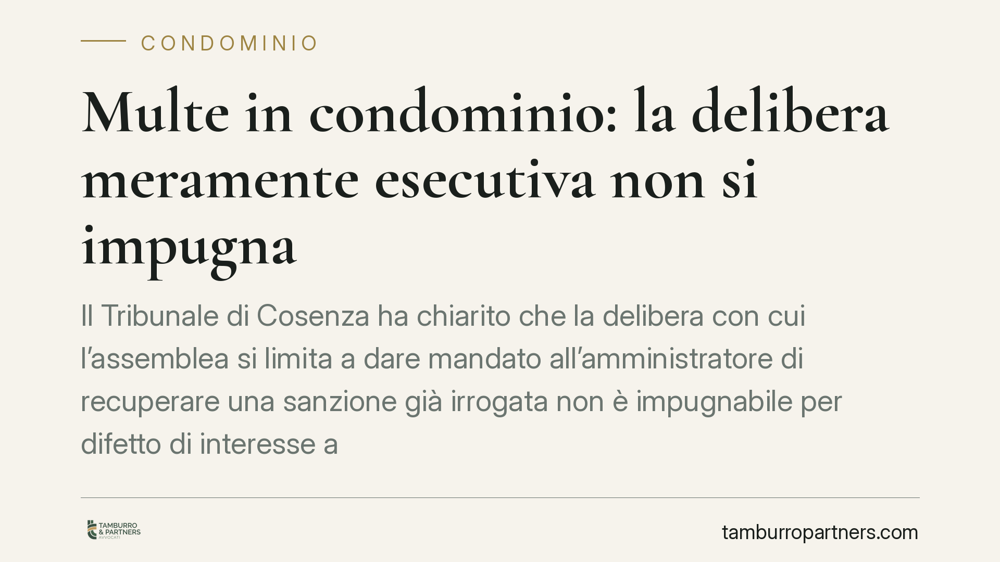

Multe in condominio: la delibera meramente esecutiva non si impugna
Il Tribunale di Cosenza ha chiarito che la delibera con cui l'assemblea si limita a dare mandato all'amministratore di recuperare una sanzione già irrogata non è impugnabile per difetto di interesse ad agire. Chi intende contestare la multa deve agire contro l'atto originario che la dispone, nei termini di legge. Una precisazione che incide sulle strategie difensive del condomino sanzionato.

Il caso
Una condomina, destinataria di una sanzione pecuniaria per violazione del regolamento condominiale, aveva impugnato la delibera con cui l'assemblea aveva conferito all'amministratore il mandato a recuperare l'importo. Il Tribunale ha respinto l'impugnazione, osservando che quella delibera non introduceva alcuna nuova determinazione: si limitava a dare attuazione a una sanzione già deliberata in precedenza.
In altri termini, l'assemblea non aveva deciso *se* sanzionare, ma soltanto *come* riscuotere una somma già dovuta. Mancava quindi l'interesse concreto e attuale a contestare proprio quell'atto.
Inquadramento normativo
La decisione poggia sul rapporto tra due norme.
L'articolo 1137 del Codice civile fissa in trenta giorni il termine per impugnare le delibere assembleari contrarie alla legge o al regolamento. Il termine decorre dalla data della deliberazione per i condomini dissenzienti e astenuti presenti in assemblea, e dalla data di comunicazione del verbale per i condomini assenti.
L'articolo 100 del Codice di procedura civile richiede, per proporre una domanda in giudizio, un interesse ad agire concreto e attuale. È il cardine della pronuncia: una delibera meramente esecutiva — che non modifica la posizione del condomino ma si limita a eseguire una decisione già adottata — non arreca un pregiudizio nuovo. Di conseguenza manca l'interesse a impugnarla.
La distinzione tra delibera che irroga la sanzione (atto costitutivo dell'obbligo) e delibera che ne dispone il recupero (atto esecutivo) diventa così decisiva. Solo la prima è idonea a ledere la sfera del condomino e, pertanto, solo la prima è utilmente impugnabile.
*La sentenza è stata indicata come n. 960 del Tribunale di Cosenza, Sezione II civile; gli estremi, compreso l'anno, vanno verificati sulla fonte ufficiale prima di qualsiasi utilizzo processuale.*
Implicazioni pratiche
Per il condomino sanzionato la conseguenza è rilevante: attendere la fase di recupero per contestare la multa è una strategia perdente. Il momento utile per reagire è quello in cui la sanzione viene deliberata, non quello in cui se ne chiede il pagamento.
Chi lascia decorrere i trenta giorni dall'atto originario rischia il consolidamento della sanzione. L'impugnazione tardiva, travestita da opposizione alla fase esecutiva, viene dichiarata inammissibile per difetto di interesse.
Va inoltre ricordato che le controversie in materia di impugnazione di delibere condominiali rientrano tra quelle soggette a mediazione obbligatoria: prima di agire in giudizio occorre esperire il tentativo di conciliazione, pena l'improcedibilità della domanda.
Resta ferma la possibilità di contestare la sanzione nel merito: se il regolamento non prevede quel potere sanzionatorio, o se la procedura di irrogazione è viziata, questi profili vanno fatti valere contro la delibera che dispone la multa, nei termini di legge.
Cosa fare in concreto
- Individua l'atto giusto da contestare. Verifica quale delibera ha effettivamente irrogato la sanzione: è quella, non la successiva delibera di recupero, a dover essere impugnata.
- Controlla i termini. Calcola i trenta giorni dalla data della deliberazione se eri presente e dissenziente o astenuto, dalla comunicazione del verbale se eri assente.
- Richiedi il verbale completo. Esamina il contenuto della decisione e la base regolamentare della sanzione per valutare eventuali vizi di legittimità o di procedura.
- Attiva la mediazione. Ricorda che l'impugnazione delle delibere richiede il preventivo tentativo di mediazione: avvialo per tempo per non pregiudicare i termini.
- Documenta ogni contestazione. Conserva comunicazioni, convocazioni e ricevute: la decorrenza dei termini dipende dalle date, che vanno provate.
È opportuno sottoporre tempestivamente il verbale a una verifica professionale, così da individuare l'atto corretto da impugnare prima che i termini maturino.
---
Contributo informativo a cura di Tamburro & Partners Avvocati - Avv. Giuseppe Tamburro. Non costituisce parere legale.
Ogni condominio ha una storia a sé.
Se gestisci un'amministrazione e vuoi un confronto su una specifica questione condominiale, scrivi allo studio. Ti rispondiamo entro un giorno lavorativo.